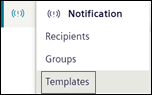
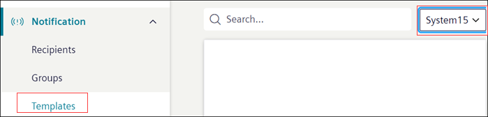

Managing Notification Template
This section provides step-by-step instructions on how to change message template state from the Flex Client.
- In the top navigation bar select System.
- In the left side bar, click .
- Navigate to Notification > Templates.

- The list of all the existing message templates displays.
NOTE: In the case of the distributed system environment, to view the Notification template of each system, select the system from the System drop-down list. 
- Select the state of the message template from the State drop down.
- The message template state is changed in Flex Client.
NOTE: Verify the state is changed in the Installed Client.
When changing the State in Flex Client, the State of the message template in Install Client > Extended Operation changes automatically but in order to reflect the same status in Install Client > Notification Templates > [message template] > Message Editor > General Settings expander > Status check box accordingly, switch to the different node and reselect the same node to get the current status.
Similarly, if the message template state is first changed in Installed Client, then to reflect the same status on the Flex Client switch to the different node from left navigation (for example, select Templates, Recipients) and reselect the same node to get the current status of the message template.